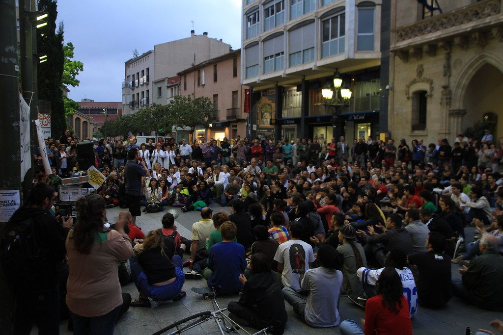

I follow public money and investigate public procurement (now with AI)
Data journalist and Executive Director of Abrimos.info. Mozilla Tech+Society Fellow from 2024 to 2026. Over 15 years building open tools and stories to make democracies work better. Machines bring the reach, people make the calls.
Platforms to keep an eye on power with data
With the Abrimos.info team and partners.
Sociedad.info
Public procurement and beneficial ownership data to vet companies and people. Over 32 million contracts from 54 countries, focused on Guatemala and Mexico.
Agencia Ocote, 2023 ↗Amnesia
An alliance with Codeando México, Data Cívica and SocialTIC that preserved the archives of Mexico's abolished transparency bodies: over 130 million records. Funded by Derechos Digitales.
Derechos Digitales, 2026 ↗Gobernantes.info
Open data on candidates and elected officials: about 4,000 verified candidacies in Mexico, Argentina and Colombia. The Guatemala Electoral Data Hub, supported by NED, starts in 2026.
Pidala.info
The right to know, made simple. Helps citizens file freedom of information requests and builds on millions of requests already answered.
Proceso, 2023 ↗Funders and partners of my work and of Abrimos.info
- Mozilla Foundation
- Pulitzer Center
- Derechos Digitales
- NED
- Google News Initiative
- Civic House's Fondo Cívico
- International Press Institute
- Access Now
The AI I use and the AI governments buy
I work with artificial intelligence in both directions: I use it to find patterns in millions of contracts and information requests, and I investigate how governments buy and use that same technology. Either way, a person has the final say. How I use AI.
“Every claim the agent makes links to a specific document row. This is non-negotiable for publishable journalism.”
“I would rather report a smaller, defensible number than a bigger, wrong one.”
“AI is not there to decide a public purchase. It is there so the institution remembers what it already bought. And an institution with memory is an institution that can be audited.”
State Algorithms: How Guatemala Buys Artificial Intelligence
2026 · facial recognition and AI video surveillance, built on Guatecompras procurement dataPin Local, a "cyborg" newsletter on municipal spending in Guatemala
2026 · AI agents propose and draft local stories from procurement data, journalists choose and verify · in SpanishNews agent on World Bank indicators
2026 · detects changes and links every figure to its source · special mention, Data360 Challenge · demoWorkshops on AI for public procurement and transparency data
2026 · Open Data Day Mexico City, Abrelatam/ConDatos, NovaGob Congress, 45 staff of Michoacán's state anti-corruption system and a prompt engineering workshop for an international humanitarian organizationAI-assisted investigation workspaces
2026 · for investigative journalism teams of a human rights NGOThe rise of AI and the challenges for data protection
2024 · Toluca, Mexico · in SpanishFor those who need to decide with data that holds up to scrutiny
With the Abrimos.info team I support governments, civil society organizations, international initiatives and companies that need to make decisions with data.
Public procurement
Price databases, competition and inclusion indicators, and procurement analysis.
Indicators and open data
Design, calculation and governance of indicator systems for public policy.
Data strategy
Analytics, search visibility and data-driven decisions for civic platforms.
AI training
Workshops for government, newsroom and civil society teams.
They have worked with Abrimos.info
- Open Data Charter
- Human Rights Foundation
- CEMEFI
- INAI
- Oxfam
- Dexis
- PODER
- Nosotrxs
- NovaGob
- Municipality of Puebla
- Government of Guatemala
How I work
- Agile methods, adapted to each client's needs.
- I work from evidence and always deliver documented decisions.
- I work in Spanish, English and Catalan. Write to me and I will reply with a written proposal.
Need something similar? Get in touch
Public records belong to us, and they hold up our democracies.
Today I lead Abrimos.info, where we build public data infrastructure to keep an eye on power: over 32 million contracts from 54 countries and over 130 million transparency records preserved. When Mexico abolished INAI and its transparency watchdogs, I co-founded Amnesia, born during my Mozilla Fellowship, to back up their archives before they went dark. Orwell needed an entire ministry to imagine erasure. Today it only takes not renewing a domain.
I also use artificial intelligence to read what no newsroom could ever get through, and I investigate the AI that governments in the region buy, often without public debate, as in State Algorithms. Almost none of it is secret: it sits in procurement portals. What is missing is not access, it is structure.
I came to this through journalism. I started in Terrassa and Barcelona: reporter and photographer at La Torre del Palau, director of the show Terrassa Solidària on Canal Terrassa and, in 2011, co-founder of Data'n'Press, one of the first data journalism studios in Spain. I worked on the data desk of El Periódico de Catalunya and in 2014 reported from Kenya for El Mundo. I came of age in the techno-optimism of Spain's 15M movement, when freedom seemed one click away. The same technologies that promised to free us ended up concentrating power in very few hands. That left me with a conviction: technology that serves democracy is not a pretty website, it is heavy infrastructure, open and hard to switch off.
In Mexico I led the data, journalism and technology team at PODER from 2014 to 2021. I co-founded Méxicoleaks, the country's first secure leaking platform, and led TodosLosContratos.mx, winner of the 2020 Sigma Award. I founded the Latin American Journalists Network for Transparency and Anti-Corruption and published in The Washington Post and Proceso. I then ran operations at Datasketch, a Colombian company, from Mexico City with frequent trips to Bogotá. I have advised Mexico's National Transparency Institute (INAI), Mexico City's Digital Agency for Public Innovation, the Municipality of Puebla and the Open Government Partnership. From 2019 to 2024 I sat on the Citizen Council of the Mexican Radio Institute (IMER), which I chaired from November 2023.
My bet: opening data should not stop at legal compliance. It should become real capacity for citizens to hold power to account. If governments make it harder to ask, we have to ask better.
Where I am headingI want artificial intelligence to help hold power to account. To help us read millions of contracts, cross-check archives no newsroom can get through and ask better questions of those who govern. At the same time, I want to keep that same technology from capturing our minds and our democracies, as already happened with the platforms that promised to set us free. The answer is the same as with archives: public, open and auditable infrastructure, with people making the decisions and a vault that never has a single key.

“Freedom seemed one click away.”15M protest camp in Raval de Montserrat, Terrassa, 18 May 2011 · Photo: Eduard Martín-Borregón
What others have awarded and said about this work
- 2026 Special mention, Data360 Challenge (Media Party and World Bank)
- 2024-26 Mozilla Tech+Society Fellowship
- 2022 IAPA honorable mention, data journalism
- 2020 Sigma Award, open data
- 2020 Nominee, Gabo Award for Innovation
- 2020 COLPIN honorable mention
- 2016 FRIDA Award, Méxicoleaks
- 2016 Nominee, Gabo Award for Innovation
- 2012 Google Excellence Scholarship, URJC master's
“With MexicoLeaks' secure filter system, we hope that many acts of corruption [...] can be published by the press and prosecuted.”
“We want the region to talk about legislating to protect whistleblowers.”
“Here we take an average and a subtraction. It's super simple. There is no mathematical complexity, and nobody could dispute a single comma.”
“Almost nothing is secret: it sits in procurement portals.”Photo: “La compra” (The groceries), Eduard Martín-Borregón, 2010
Ten pieces and three videos
Data investigations, field reporting and opinion. Most pieces are in Spanish. The full list, with about 90 verified references, is under References.
Institutions break up opaque video surveillance procurement contracts involving questioned suppliers
2026 · with María José Longo BautistaMedicine shortages in Mexico: overpriced purchases and opacity
2021 · based on Salud, Dinero y CorrupciónTodosLosContratos.mx
2019-2020 · 3.8 million federal contracts with risk scoringMéxicoleaks
2015-2020 · secure leaking platform, which I coordinated for five yearsCell phone data and calls at risk from fake antennas in Latin America
2020 · with Ricardo BalderasFollowing the Money in Latin America: Reflections from Condatos
2017 · in English · with Jorge Florez and Katherine WikrentBarcelona, the municipality that gave most to political parties
2013 · data deskTalks and workshops
I speak and teach about AI, public procurement and transparency, with real data instead of textbook examples.
AI to watch public money
How to ask a model to read contracts and suppliers, and why a pattern is a question and not an accusation.
The AI governments buy
What systems the state acquires, with what data and under what rules, based on its own tenders.
Preserving public archives when the state switches them off
What we learned at Amnesia from portals and transparency-body archives that disappear.
Public procurement as a journalistic source
From a purchasing portal to a verifiable story.
AI and data protection
What changes when an AI reads public information that contains personal data.
Formats
- Talk 30 to 45 minutes, one real case with a live demo
- Hands-on workshop 1 to 3 hours, with real procurement or transparency data
- Panel as speaker or moderator
Languages
Spanish, English and Catalan
Who it is for
Journalists, anti-corruption systems, transparency bodies, universities and civil society

Where I have spoken and taught
- Abrelatam/ConDatos 2026, Guatemala AI workshop on public procurement data and two panels
- Open Data Day Mexico City 2026 workshop on analyzing transparency data with AI
- No archive, no democracy, Tec de Monterrey 2025 · panel on Amnesia
- International Journalism Festival, Perugia 2022
- ABRAJI Congress, Brazil 2022
- Teaching at Universidad Iberoamericana (2017-2022) and Centro Universitario Villanueva, Complutense University of Madrid (2016-2018)
Tell me what you want to know
I am always glad to talk about public procurement, transparency, open data and AI for the public interest. Whether you are a funder, an event organizer, a journalist looking for a source or want to work with Abrimos.info, write to me. I work in Spanish, English and Catalan. For events and press, copy my bio or download a high-res photo.
Background photo: Terrassa at sunrise, 4 January 2011 · Eduard Martín-Borregón